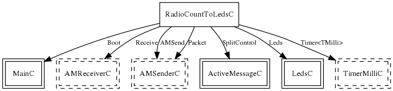

Configuration for the RadioCountToLeds application. RadioCountToLeds maintains a 4Hz counter, broadcasting its value in an AM packet every time it gets updated. A RadioCountToLeds node that hears a counter displays the bottom three bits on its LEDs. This application is a useful test to show that basic AM communication and timers work.
